IchiPing on Solist-AI
セットアップ・操作マニュアル
対象：通常推論ファーム ichi_infer_main
設置・接続、起動、推論、ODL、保存状態のリセット、障害対応
最新の通常推論ファームを搭載した完成済みデバイスが対象です。外観は写真待ちの枠で示しています。電源の現物ラベル、電源スイッチの場所、トグルのOPEN方向は、写真受領後に照合して追記します。UIはファームの実コードをエミュレーションして生成した表示例で、実機撮影ではありません。
システム概要
スピーカーから短い測定音を出し、1個のマイクで反響を聞いて、模型の窓と扉の開閉状態を推定します。
部屋A・B・Cにある窓a・b・cと、部屋をつなぐ扉AB・BCの計5か所を操作します。開閉の組み合わせは2の5乗＝32通り。本体のSolist-AIが特徴抽出とAI推論を行い、TFT画面に実際の状態と推定結果を表示します。
来場者側の斜め前から撮影。3部屋の模型、5個のトグル、EXEC、TFT、電源までを1枚に。机上の配置が分かる余白を残してください。
横位置・推奨 16:9・長辺 2400px以上展示担当者が使う操作
通常は5個のトグルとEXECだけを使います。PCはログ取得や保守が必要なときに接続します。
自動動作中の注意
起動時、推論中、ODL中は模型が自動で動いたり音が出たりします。窓・扉・サーボの動作範囲を空けてください。
同梱品と各部の名称
| 用意するもの | 用途・確認すること |
|---|---|
| 3部屋の模型・サーボ5個 | 窓a・b・c、扉AB・BC。可動部の外れや引っ掛かりがないこと。 |
| Solist-AI本体・TFT | 推論、ODL、結果表示。通常推論用ファームが書き込まれていること。 |
| Stamp-S3A・中間基板 | 音の再生・録音、トグル・EXECの読み取り。基板とケーブルの固定を確認。 |
| マイク・アンプ・スピーカー | 測定音の入出力。設置済みの位置と向きを維持。 |
| トグル5個・EXEC | トグルで状態を指定。EXEC短押しで推論、長押しでODL操作。 |
| 指定電源・給電ケーブル | Solist側と中間基板・サーボ側。現物の出力電圧・容量・極性ラベルを照合。 |
| 予備品・保守用PC（任意） | 予備ケーブル、固定具、ログ取得環境。通常の実演にはPC不要。 |
窓a・扉AB・窓b・扉BC・窓cのラベルと、OPEN / CLOSE方向が読めるように。上下の向きを含め、パネル全体を正面から撮影してください。
横位置・推奨 4:3・文字にピント部屋・窓・扉の名称と表示順
画面では1＝OPEN（開）、0＝CLOSE（閉）です。小文字a・b・cは窓、AB・BCは扉を表します。
会場での設置と接続
- 模型と操作部を安定した机に置く
窓・扉・サーボの動作範囲を確保します。マイクとスピーカーの位置・向き、模型内の物の配置は、準備時の状態を維持してください。
- 電源を切った状態で配線を確認する
Solist-AIと中間基板の制御ケーブル、TFT、操作部、マイク・アンプ、サーボの接続を確認します。完成済みハーネスのラベルを合わせ、差し込み不足を点検します。
- 指定電源を接続する
Solist-AIのUSB電源入力はCN8です。中間基板・サーボ側は外部5 V系統を使用します。展示機の電源構成は下の写真枠P03・P04で現物照合する前提です。給電経路やジャンパを変更するときは保守担当者が確認します。
- ケーブルを固定し、次章の起動へ進む
抜き差しや模型への接触が起きないように余長をまとめます。来場者がケーブルを引っ掛けない位置に置いてください。
電源OFFの状態で、Solist CN8、CN9、CN3と接続済みケーブル、電源スイッチがある場合はその位置を撮影。現物ラベルが読める距離で。
横位置・4:3・コネクタ全体展示で使うアダプタ・電源タップ・ケーブルを接続先と一緒に撮影。出力電圧、電流、極性のラベルは別カットでも可。JP_STAMP_5Vの実装状態も確認できる写真を添付。
横位置・ラベルの接写を併用中間基板のJ_PWR_LOGICとJ_PWR_SERVOは同じ5 Vレールです。接続する場合は同じ電源を使います。StampをUSB給電するときはJP_STAMP_5Vを開放し、外部5 Vから給電するときだけ短絡します。Solist CN3の5・8番は中間基板で未使用です。詳細は配線ガイドを参照してください。
3部屋を上から撮影し、マイクとスピーカーの位置、5個の可動部とサーボが分かる構図に。屋根等を外す必要がある場合は保守担当者が対応してください。
横位置・推奨 4:3・全5か所を含める起動と動作確認
EXECを離した状態で給電します。窓と扉を自動で全閉にした後、基準となる反響音を3回取得します。起動時の基準音取得と、約30分かかるODLは別の処理です。
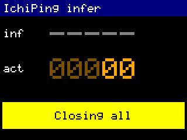

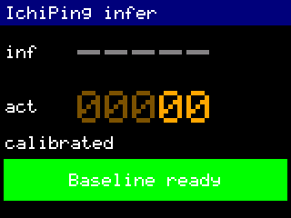
起動処理後にトグルの状態が画面と模型へ反映されると、Baseline readyの帯は消えます。上段infが「-----」、下段actがトグルに応じた0/1になっていれば、状態を選びEXECを短押しして確認してください。
通常の使い方
- 5個のトグルで窓・扉の状態を選ぶ
画面のactが先に切り替わり、サーボが追って動きます。状態を変えると前回の結果はクリアされます。
- EXECを短押しして離す（2秒未満）
離した時点で推論を開始します。動いているサーボがあれば、動作と整定を待ってから測定します。
- 音が止まっても結果が出るまで待つ
Listening... → Transferring... → Inferring... → 結果の順です。測定音は約2秒。音が止まった後も処理が続きます。処理中はトグルとEXECの追加操作を控えてください。
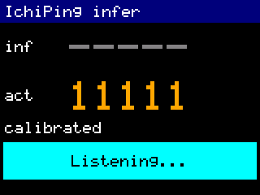
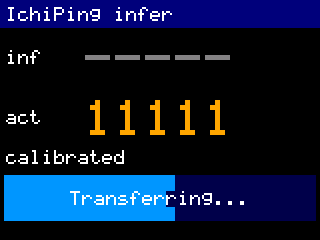
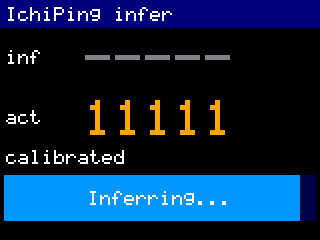
ゲージは処理の進み具合の目安で、残り時間や信頼度ではありません。2026-11-07の実機記録では転送・FFT部分だけで約6.8秒かかっています。実演では1回ごとに余裕を持って待ちます。
画面の読み方
| 表示 | 意味 |
|---|---|
| 上段 inf | AIの推定結果。未推論時は「-----」。 |
| 下段 act | トグルで指定した実際の状態。サーボが正常に動いていることが前提。 |
| 左から c・BC・b・AB・a | 窓c／扉BC／窓b／扉AB／窓a。1が開、0が閉。 |
| infの緑 / 赤 | 桁ごとの一致 / 不一致。判定は下の帯の文言も合わせて確認。 |
| 暗く表示される桁 | 閉じた扉の奥にあり、音響的に聞き分ける対象から外れる箇所。故障や表示欠けではありません。 |

Complete Success
5桁すべて一致。窓・扉の32通りを完全に当てています。
上のボタンで表示例を切り替えられます。実機への通信・操作は行いません。


扉ABが閉じていると、その奥の窓b・窓c・扉BCは暗く表示されます。ABが開いていてBCが閉じていると、窓cだけが暗くなります。扉を両方開けた例では、全5桁が明るく表示されます。
現地校正（ODL）
ODLは、設置環境に合わせて本体で追加学習する機能です。全32状態を自動で巡回します。
離した後の確認画面で、全トグルをOPENにしてEXECをもう一度押すと開始します。保存済みODLがあれば引き継いで追加学習します。保存がなければ事前学習モデルから始めます。旧仕様の説明と混同しないでください。
6.1 実施するタイミング
会場へ移動した後、配置や音響条件が変わり、通常推論で誤判定が続く場合に実施します。まず接続・可動部・マイクとスピーカーの位置を確認してください。約30分の準備時間を確保し、開場前など模型を自動運転できる時間帯に行います。初期実測は約30分11秒で、最新版の所要時間を保証する値ではありません。
6.2 追加ODLを開始する
- EXECを約2秒押し、「Release: add ODL」が出たら離す
2秒以上10秒未満で離してください。10秒まで押し続けるとリセット確認になります。
- 「Add ODL?」を確認する
ここではまだ学習は始まりません。画面に「All OPEN + EXEC: yes」と表示されます。
- 5個のトグルをすべてOPENにし、EXECを再度押して離す
確認待ちの間は、トグルを変えてもサーボはその指定に追従しません。物理的に窓を手で開く必要はありません。スイッチ指定を全OPENにしてください。
- 「Additional ODL」または「New ODL」で学習開始を確認する
保存状態を引き継ぐ場合はAdditional ODL、保存がない場合はNew ODL。自動で窓・扉が動き、各状態で6秒の測定音を出します。
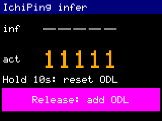
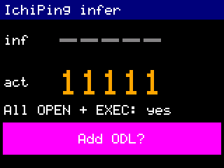
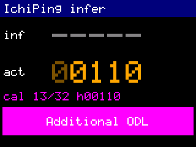
6.3 キャンセル・中断・完了
| 場面 | 操作と結果 |
|---|---|
| 確認画面で取り消す | 5個のうち少なくとも1個をCLOSEにしてEXECを再度押すとCanceled。トグルを変えるだけではキャンセルしません。 |
| 実行中に中断する | EXECを押します。検出後、Calibration abortedとなり、直前に保存したODLへ戻ります。保存がなければ事前学習モデルへ戻ります。処理の区切りまで反応に時間がかかることがあります。 |
| 正常に完了する | Calibratedとpost-updateの集計を表示し、P・βをFRAMへ保存します。模型は現在のトグル指定へ戻ります。 |
| 電源を入れ直す | モデル識別情報とチェックサムが一致すれば保存ODLを復元。全閉基準音は起動ごとに取り直します。 |
| もう一度ODLする | 同じ開始操作で、最後に正常保存したP・βから追加で学習します。 |
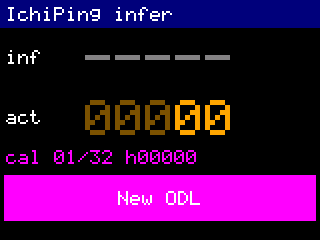
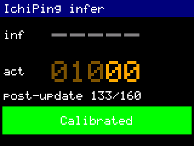
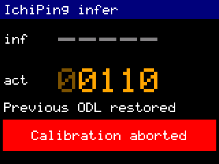
1窓を学習した直後に、同じ窓を再推論した正解数の累計です。32状態×5窓＝160回。値だけで展示の認識性能を判断せず、完了後に通常推論を複数の状態で試してください。
6.4 保存ODLをリセットする
事前学習モデルからやり直したい場合に使います。保存済みODLを消す操作なので、通常の実演では使用しません。
- EXECを10秒間押し続ける
2秒の追加ODL案内が出ても押し続け、「Reset ODL?」まで待ってから離します。
- 全トグルOPENでEXECを再度押す
ODL reset / Pretrained modelを表示して完了。取り消す場合は少なくとも1個をCLOSEにして再度EXECを押します。
- 新規ODLが必要なら、改めて2秒長押しと確認操作を行う
リセットだけで学習は始まりません。5秒長押しに割り当てられた別操作はありません。
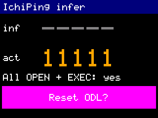
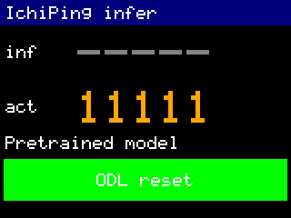
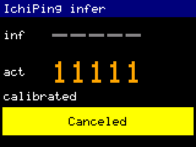
起動時からEXECを押していた場合は、一度離すまで長押しを受け付けません。追加ODL・リセットの確認待ちに自動タイムアウトはありません。
展示時の操作と確認
通常推論の操作と結果の確認手順を示します。窓・扉の状態変更はトグルで行います。
- 扉AB・BCをOPENにして推論する
画面の5桁が明るく表示されることを確認し、EXEC短押しで1回推論します。窓を1個切り替え、actの対応する桁と模型の動作を確認して再推論します。
- トグル指定と模型の状態を確認する
模型へ直接力を加えず、トグルで操作します。測定中は可動部や音響部品に触れず、結果表示まで待ちます。
- inf・actと判定帯を確認する
Complete Successは5桁の一致、Conditional Successは14クラスの一致です。Failureの場合はトグル指定・模型の状態・音響部品の位置を確認して再測定します。
センシング方式
このデモはスピーカーの測定音と1個のマイクの反響を使います。開閉の推定にカメラは使いません。
PC・ネットワーク接続
推論と現地校正は本体で行います。実演にインターネットやPCは不要です。
設置条件の変更
反響は設置条件に影響されます。起動時に全閉の基準を取り、必要ならODLで追加学習します。
開閉状態の指定
トグルで操作します。actはスイッチ指定なので、模型を手で動かすと表示と実際の状態がずれる場合があります。
トラブルシューティング
まず画面の文言、操作直前の状態、電源と配線を確認します。配線を抜き差しするときは電源を切ってください。異常なサーボ動作がある場合は実演を止め、可動部を解放します。
| 症状・表示 | 確認と対処 |
|---|---|
| 画面が点かない | Solist側とTFT・中間基板側の給電を確認。指定電源、ケーブル、コネクタを照合し、通電をやり直します。 |
| Stamp not ready | Stampの給電とSolist―Stamp間I²C接続を確認。電源OFFでコネクタを点検し、再起動。繰り返す場合は保守担当者へ。 |
| PCA9685 no ACK | サーボ制御基板の給電・I²C配線を確認。この表示では起動処理が停止します。接続を直してから再起動します。 |
| 音が出ない | 測定開始のListening...表示を確認。アンプ電源・スピーカー接続を点検。音量や音響部品の位置をその場でむやみに変更せず保守担当者へ。 |
| actは変わるが模型が動かない | actは指定値です。サーボ電源、PCA9685、サーボコネクタ、機械的な引っ掛かりを確認。無理に手で回さないでください。 |
| 結果が外れる | 指定と模型の状態が一致しているか、マイク・スピーカーがずれていないかを確認。同じ状態で再測定。環境変更後なら再起動で基準を取り直し、必要に応じて追加ODL。 |
| 2秒押しても学習しない | 最新仕様は確認操作が必要です。2秒で離し、Add ODL?に進んで、全トグルOPEN＋再度EXEC。起動時から押しっぱなしなら一度離します。 |
| 確認画面から戻らない | 1個以上のトグルをCLOSEにして、EXECを押します。スイッチを変えるだけでは戻りません。 |
| ODLが長い / 中断したい | 目安は約30分。画面のcal番号が進むか確認。中断はEXECを押して処理の区切りを待ちます。中断・失敗時は直前の保存ODLを復元します。 |
| 電源再投入でODLが使われない | 正常完了・保存されていたか、モデルを書き換えていないかを確認。モデル識別情報やチェックサムが合わない保存は復元されません。 |
Error stageの意味
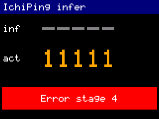
| 番号 | 処理 |
|---|---|
| 1 | Stamp応答 |
| 3 | 測定 |
| 4 | PCM読み出し・特徴計算 |
| 5 | 推論 |
| 6 | サーボ制御 |
| 7 | ODL学習・保存等 |
再起動後の全閉・基準音取得が完了し、模型がトグルに追従することを確かめてから、EXEC短押しで動作を確認します。ODLリセットは通常の復旧手順として毎回実行するものではありません。
終了・片付け・運搬
- 実行中の処理を終える
推論の結果を待ちます。ODL中ならEXECで中断し、復元処理の表示を待ちます。保存中の電源断を避けてください。
- トグルを全CLOSEにし、模型が閉じるのを待つ
確認画面のままなら、先にキャンセルします。窓・扉を閉じた状態に整えてから給電を止めます。
- 電源を切ってからケーブルを外す
本体と中間基板・サーボ側の給電を止めます。ケーブルのラベルを残し、コネクタを持って抜きます。
- 可動部と音響部品を保護する
サーボ軸・窓・扉に荷重がかからないように梱包します。翌日は設置状態を戻し、起動と基準音取得、通常推論を再確認します。
運搬用ケースに収めた状態を上から撮影。窓・扉・サーボを圧迫しない保護材と、電源・ケーブルの収納場所を見せてください。
横位置・推奨 4:3・全収納物を含める当日用クイックガイド
開場前に上から確認します。チェックはこのブラウザ内に保存されます。翌日の準備時はリセットしてください。
| やりたいこと | 操作 |
|---|---|
| 1回推論 | 状態を選び、EXEC短押し（2秒未満）→離す。 |
| 追加ODL | EXEC約2秒→離す→Add ODL?→全OPEN＋EXEC再押下。 |
| 確認のキャンセル | 1個以上CLOSE＋EXEC再押下。 |
| 実行中ODLの中断 | EXECを押し、処理の区切りまで待つ。 |
| ODL消去 | EXEC10秒→離す→Reset ODL?→全OPEN＋EXEC再押下。 |
画面の桁：左から c・BC・b・AB・a。1＝開、0＝閉。上段inf＝推定、下段act＝指定。青帯＝完全一致、緑帯＝条件付き一致、赤帯＝不一致。
ODLは約30分を見込みます。再起動は保存ODLを消しません。起動時のCalibrating...は全閉基準音の取得です。
保守担当者向け情報
このマニュアルの操作仕様は、リポジトリの08668a8にあるichi_infer_mainとichi_exec_control.hを基準にしています。展示機へ書き込まれている版も、開場前に保守担当者が照合してください。
UI画像の生成方法
実際のichi_ui.cをCortex-M0+向けにコンパイルし、Unicornで実行。描画関数への呼び出しをRGB画像へ描き、ichi_tft.cと同じ5×7フォントを使って320×240ピクセルのPNGにしています。レイアウト・桁の色・判定・ゲージは実UIコードに従います。
画面に与えた状態、進捗、post-updateの値は説明用の例です。画像は画面部分のみで、TFTの枠と周囲の配置はHTML側の装飾です。液晶の見え方や画面遷移の時間を再現したものではありません。
PCでログを取る
通常推論ファームのUARTは115200 bpsです。PC通信側の接続とCOM番号を確認し、Python環境にnumpy・pyserialを用意します。以下はリポジトリ直下で実行する例です。
python firmware/IchiPingInference/tools/infer_monitor.py --port COM3 --log output/exhibition_infer.jsonlCOM3は例です。起動中はデバイスの画面で基準取得の完了を確認してください。ログを止めるにはCtrl+C。ファーム書き換え中や他のモニタと同時に同じCOMを開かないでください。
ファームの復旧
通常実演はichi_infer_mainを使います。採取用・サーベイ用とは操作が異なります。書き換えは展示担当者の通常作業から外し、保守担当者が実施します。LEXIDEのOpenOCD、MCU-Linkドライバ、ROHM DFPを準備したPCで、推論用イメージを指定します。
powershell -ExecutionPolicy Bypass -File firmware\IchiPingInference\tools\flash.ps1 -Firmware firmware\IchiPingInference\prebuilt\ichiping_infer.flash.bin -ExecuteStamp側はfirmware/StampMeasureのファームを使用します。Solistのフラッシュイメージに個体の保存ODLは含まれません。別個体へ書き込んだだけでは校正状態は移りません。モデル変更時は保存ODLが復元対象外になる場合があります。
正本と関連資料
撮影する写真の一覧
各写真の枠を差し替えるための撮影リストです。画像ファイルにP01〜P06を付けると対応を確認しやすくなります。UI画面の撮影は不要です。P03・P04は接続先と電源の現物確認にも使います。
| ID | 撮影対象 | 必ず写してほしいもの |
|---|---|---|
| P01 | 展示全景 | 模型・操作部・画面・机上配置。来場者側から斜め前。 |
| P02 | 操作パネル正面 | トグル5個、各名称、OPEN/CLOSE方向、EXEC、TFT。 |
| P03 | 本体の接続部 | CN8/CN9/CN3、実際に使うケーブルと接続先、電源スイッチ。 |
| P04 | 電源と給電経路 | アダプタの定格・極性、ケーブル接続先、JP_STAMP_5V。接写の追加可。 |
| P05 | 模型内部の俯瞰 | 窓a/b/c、扉AB/BC、サーボ、マイク・スピーカーの固定位置。 |
| P06 | 片付け後の状態 | ケース内の配置、可動部の保護、電源とケーブルの収納場所。 |
推奨：横位置・長辺2400px以上。反射を避け、部品や文字が見切れない構図で撮影してください。公開ページに掲載するため、PC画面・名札などの個人情報が写り込まない写真を使います。
↑ マニュアルの先頭へ戻る